nasu
introduction
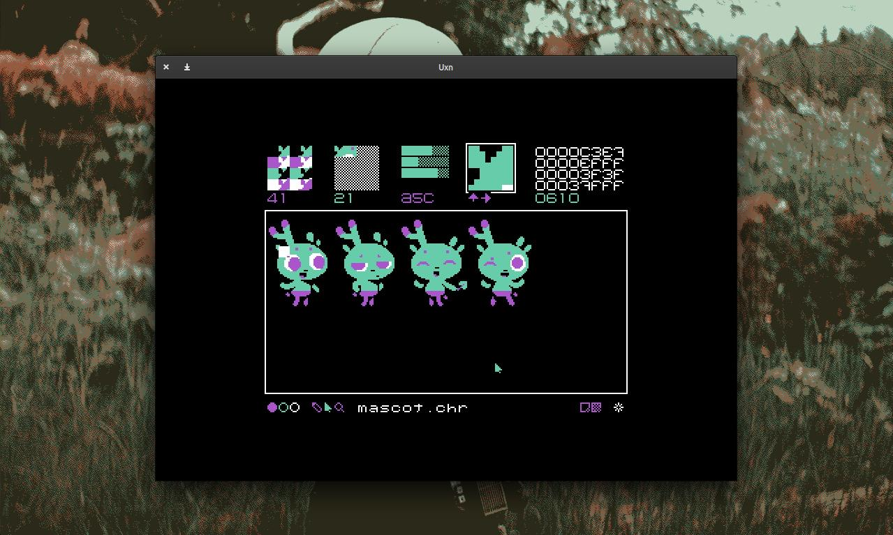
Nasu is a spritesheet editor created to help us design and assemble the assets of our famicom games. It can both import and export .chr spritesheets. The viewport displays the project tiles, each tile is 8 by 8 pixels and each pixel is one of 4 colors.
Meet Nasubit, the mascot for Nasu. Nasubit is there to talk about updates relating to Nasu.
nasu guide
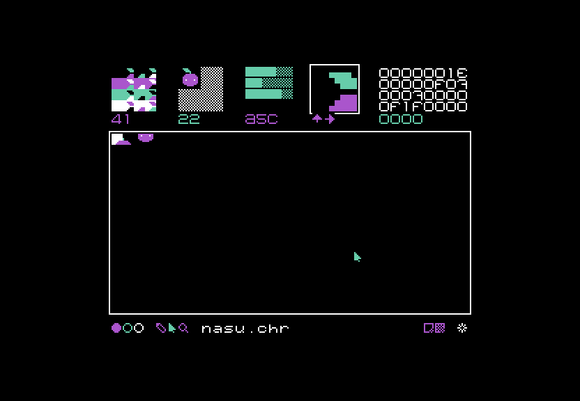- Shortcuts
- Launching Nasu
- Renaming a file
- Saving a file
- Importing a file
- New file
- Blend view
- Pre-view
- Color view
- Zoom view
- Data view
- Color tool
- Select tool
- Pencil tool
- Zoom tool
Shortcuts
- arrows move selection
- enter insert tile
- backspace delete tile
- left-click add pixel, select tile
- right-click remove pixel, clone tile
- 1 2 3 select color
- q w select tool
- ctrl+n clear
- ctrl+r rename
- ctrl+o load
- ctrl+s save
Launching Nasu
Nasu is distributed as a rom for the uxn system. To launch it, navigate to the folder in which you want your project files to be saved using the terminal, then enter the following to launch the Nasu rom:
~/roms/nasu.rom
Re-naming a file
The default filename reads untitled.chr. To change it, click on the text. The text field will flash white, click on it and erase the existing filename. Enter the new filename with the .chr extension. Always include the extension when re-naming a file.
Read more about the chr file format.
Saving a file
To save a file, click on the white star located on the bottom right of the window.
The star has two states: Grey means the file was saved. White means that the file was changed, and that the change has not yet been saved
Importing a file
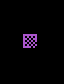To import an file, erase the current filename and write the name of the .chr file you wish to import, and click enter. To import the file click on the checkered square on the bottom right of the window.
If switching between projects, close Nasu and navigate to the correct project folder in the terminal prior to launching it again.
New file
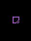To load a blank file, click on the empty square icon on the bottom right of the window.
Make sure to re-name your file.
Blend view
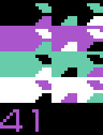In the blend view there are 4 rows and 4 columns, which display all of the possible color permutations in a project, and allows you to switch through them with ease.
If you have a tile with pixel information selected, the blend view will display that title in different colors. Clicking on one will alter all the tiles on your canvas.
Blend view is useful when you need a tile to display in more than one color in a single project. Note the number under the 4 rows once you've found a suitable blending mode.
Pre-view
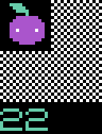Pre-view is useful when creating spritesheets.
On a spitesheet all tiles that make up a sprite will need to be lined up from left to right. For someone assembling a character that spans multiple titles, it is easier to locate the position of each piece if they follow each other. The issue with having many tiles lined that way, is that if they form a sprite that spans many tiles, it is difficult to make sense of it. By selecting the number of tiles it is meant to fill the pre-view will combine tiles to make a sprite.
Say your sprite is 16x16(or 2x2 tiles). On the canvas the 4 tiles follow each other horizontally. To visualize them as a full sprite, select the starting tile for that sprite (upper left) with the select tool. Tiles will appear in the pre-view. Navigate to the pre-view menu and select 2x2 tiles. The number below indicates the tile size, 2x2 or 22 for our example.
Color view
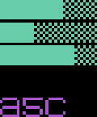Color view is located on the top. This view permits you to change colors. There are 3 opaque sliders on a checkered background, moving the sliders will change the colors in Nasu.
The number underneath the sliders is the color code for the project. When making a game, write down this number so you can replicate the color palette of the project.
Zoom view
When selecting a tile with pixel information it, an enlargened version of it appears in the zoom view. This is an isolated view of your tile that you can use to make quick changes. It is possible to draw it in directly, and it will alter the version on the canvas.
The up and down arrows will offset the tile to preview an asset that needs to tile perfectly with itself. It's also useful to move a shape up and down by a few pixels without having to re-draw it.
Data view
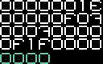The data view menu is located on the top right corner of the window, if your canvas is empty it will read 4 rows of 8 zeros with a row of 4 zeros underneath. Data view, as its name suggests, is a way to rapidly preview the code for each tile.
The numbers in the row of 4 numbers changes when clicking in the empty canvas, marking the position of the cursor. This is useful to see where sprites start and end in a .chr file.
If you click on the first upper right tile, the number will read oooo. Moving from left to right, this number will increase until it starts to use letters. This is because uxn uses base-16, a way to identify byte values without having to look at 1's and 0's. It's similar to the number system we use everyday to count with (decimal), in the way that it combines a set of digits to create large numbers (1 paired with a 0 is 10). Like hexadecimal, the language in Uxn uses a set of 16 unique digits. Base-16 uses the standard 0-9 numbers, like the decimal system, but it also incorporates letters: A, B, C, D, E, and F.
The table below shows the letters and numbers used in base-16, and their corresponding collection of 1's and 0's in binary:
| 0 | 0000 | 4 | 0100 | 8 | 1000 | C | 1100 |
| 1 | 0001 | 5 | 0101 | 9 | 1001 | D | 1101 |
| 2 | 0010 | 6 | 0110 | A | 1010 | E | 1110 |
| 3 | 0011 | 7 | 0111 | B | 1011 | F | 1111 |
It isn't crucial to understand the innerworkings of the data view to use Nasu, it is written here in the interest of sharing how things work and what every number or letter represents.
Opening a .chr file with pixel information in a text editor will reveal that the numbers and letters match the ones in your data view. Making sense of a .chr document is tricky, but the data view can help locate and organize specific tiles.
If you fill the canvas with a drawing, the information in the data view will change with letters and numbers. This is your drawing in numbers and letters. Copying this sequence of numbers and letters in a new .chr file would result in the same pixel arrangement.
Color tool
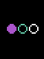At the bottom left, there are 3 colored circles. You can only ever use 4 colors(including background) in a project. Select a circle to change color. Unselecting all circles will pick black, which by default is the background color. Black assigned as a background color doubles as an eraser. Right-click on a pixel in your canvas to 'erase' it, or to blend it with the background color of your project.
Pencil tool
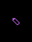The pencil tool is next to the select tool, used to draw pixels on the canvas.
No further explanation is needed, we think :).
Select tool
The 'select' tool is the arrow, located next to the color tool.
The select tool is used to move between tiles, it's also useful to copy tiles from one place on the canvas to another. To do this, select the tile you wish to duplicate, move elsewhere on the canvas and right-click. The tile will appear on the new spot as a duplicate. This is a useful tool when building spritesheets, or to re-use part of a sprite to draw another pose.
Zoom tool
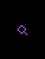For a more detailed view of a drawing, select the zoom tool (magnifying glass).
This view shows outlines of each 8x8 tile, with each drawn pixel appearing as a dot. This tool is useful to make detailed corrrections to a tile. Click on the magnifying glass again to return to the normal view.
Distributions
Nasu is available as a standalone application written in portable C89. It is distributed as a single file C file that build into a 20kb executable designed to runs offline and having only SDL2 as dependency.
The application was initially built to help with porting of donsol to the Famicom, and later evolved to include the features of the drawing software Noodle. It is currently used to create both Famicom projects such as Spacetime, and various assets for dotgrid and orca>.
Alternatively, if you don't wish to build the C89 version yourself, and have access to a reliable internet connection, you can use Nasu in your browser.
license
The license applies to all the documented projects, the projects themselves and their assets. The source code of this website and our apps are under the MIT License, but the assets and text content of this website and of our apps are under the BY-NC-SA4.0 License. We are happy to pass knowledge, and that others can learn from our projects, improve on them, or make them into something else that is useful, but please, do not try to sell our projects as is under a different name. Doing so is very lazy, and disrespectful to us.
DO NOT resell or mint our work.
You can find our more recent projects on Sourcehut.
pull request
See the Github and Sourcehut repositories. Pull Requests are welcome, but please read our design philosophy first.